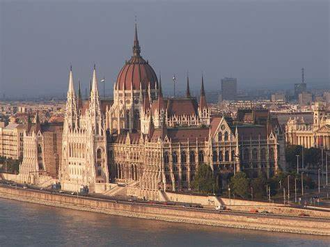
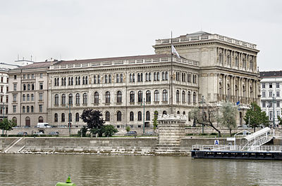
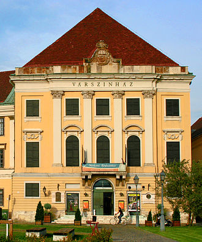
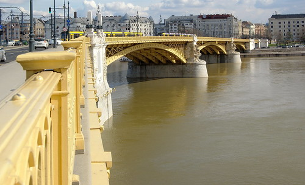
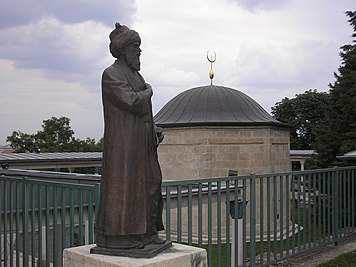

A mai Budapest területének írásos történelme a római helyőrséggel, Aquincummal kezdődik, amelyet i. sz. 89
körül alapítottak a Duna nyugati partján. Aquincum i. sz. 106-tól a 4. század
elejéig a kettéosztott Pannonia tartomány egyik részének, Alsó-Pannóniának a központja
volt. Lakossága 20 000 fő körüli volt. A mai Óbudai-szigeten épült helytartói palotában olykor maguk a római
császárok is megfordultak. A modern város területén több római segédcsapat tábor és ellenerőd is megtalálható.





 Charge and save
Vissza a főoldalra
Charge and save
Vissza a főoldalra